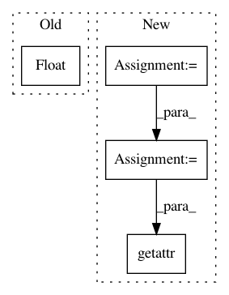

d3babe1252d05f07e58a6602b47e1a09bbd56af5,networkml/parsers/pcap/reader.py,,parse_packet_head,#Any#,8
Before Change
"""
// TODO: should be using utcfromtimestamp()
try:
date = datetime.datetime.fromtimestamp(float(layers_json["frame"]["frame.time_epoch"]))
except (ValueError, KeyError):
return None
After Change
dst_address = None
for ip_type in ("ip", "ipv6"):
try:
ip_fields = getattr(packet, ip_type)
except AttributeError:
continue
src_address = getattr(ip_fields, "%s.src" % ip_type)
dst_address = getattr(ip_fields, "%s.dst" % ip_type)
src_port = "0"
dst_port = "0"
for ip_proto_type in ("tcp", "udp"):
try:
ip_fields = getattr(packet, ip_proto_type)
except AttributeError:
continue
src_port = getattr(ip_fields, "%s.srcport" % ip_proto_type)
dst_port = getattr(ip_fields, "%s.dstport" % ip_proto_type)
if src_address and dst_address:
return date, ":".join((src_address, src_port)), ":".join((dst_address, dst_port))
In pattern: SUPERPATTERN
Frequency: 3
Non-data size: 4
Instances
Project Name: CyberReboot/NetworkML
Commit Name: d3babe1252d05f07e58a6602b47e1a09bbd56af5
Time: 2019-12-10
Author: josh@vandervecken.com
File Name: networkml/parsers/pcap/reader.py
Class Name:
Method Name: parse_packet_head
Project Name: pyannote/pyannote-audio
Commit Name: abbfdc5b04ec1824e42cebb472626d234ff7bd36
Time: 2017-01-09
Author: bredin@limsi.fr
File Name: scripts/speaker_embedding.py
Class Name:
Method Name: tune
Project Name: pyannote/pyannote-audio
Commit Name: abbfdc5b04ec1824e42cebb472626d234ff7bd36
Time: 2017-01-09
Author: bredin@limsi.fr
File Name: scripts/speaker_embedding.py
Class Name:
Method Name: test